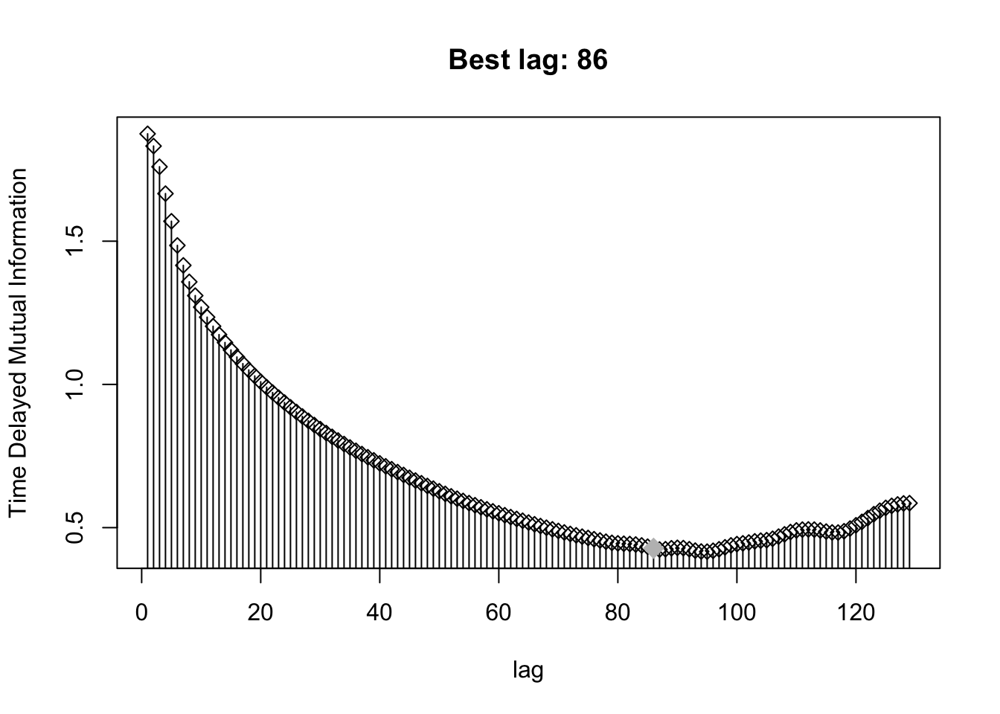
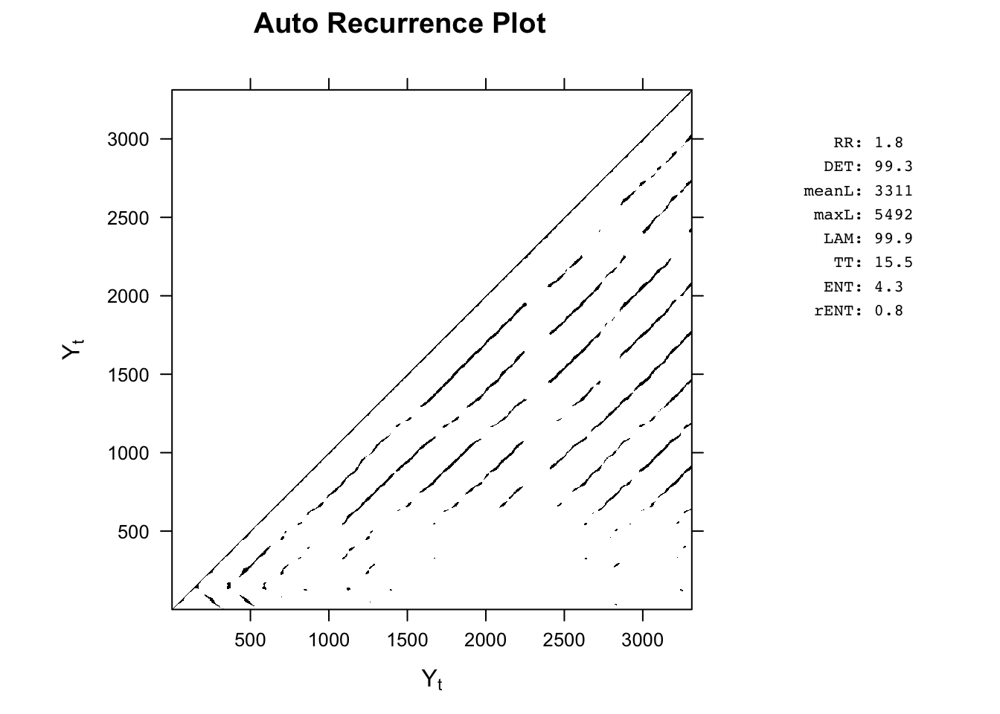
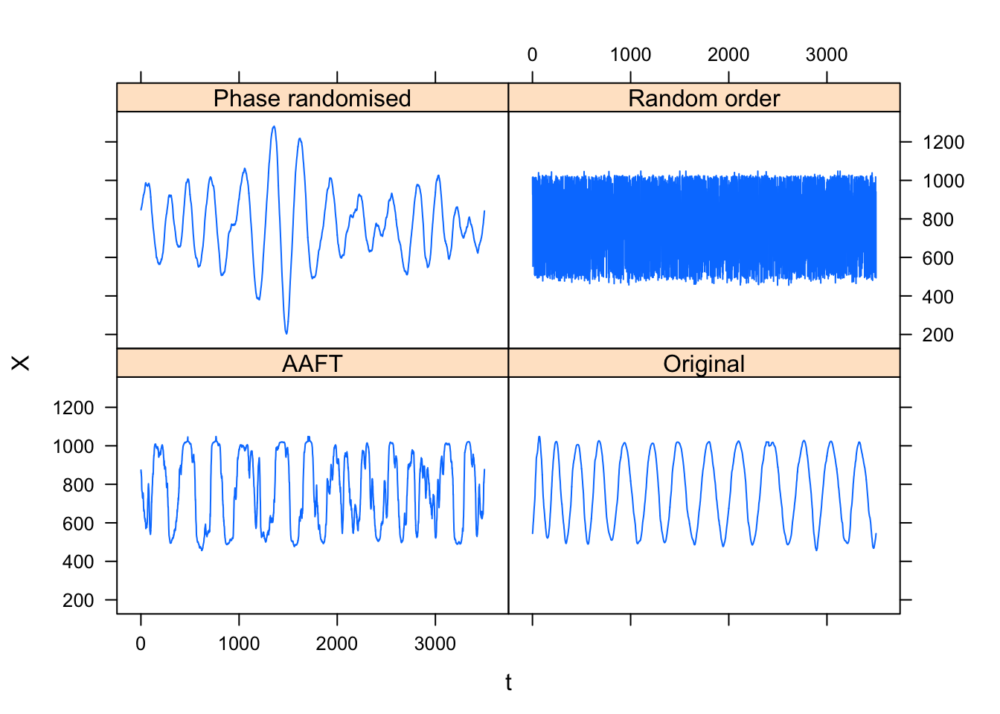
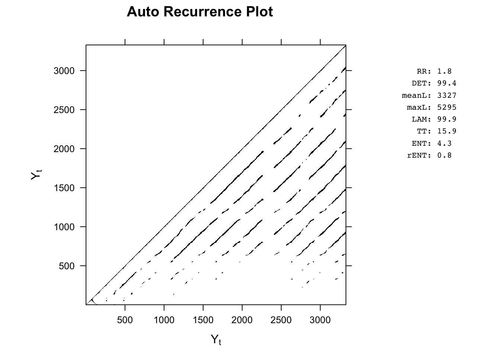
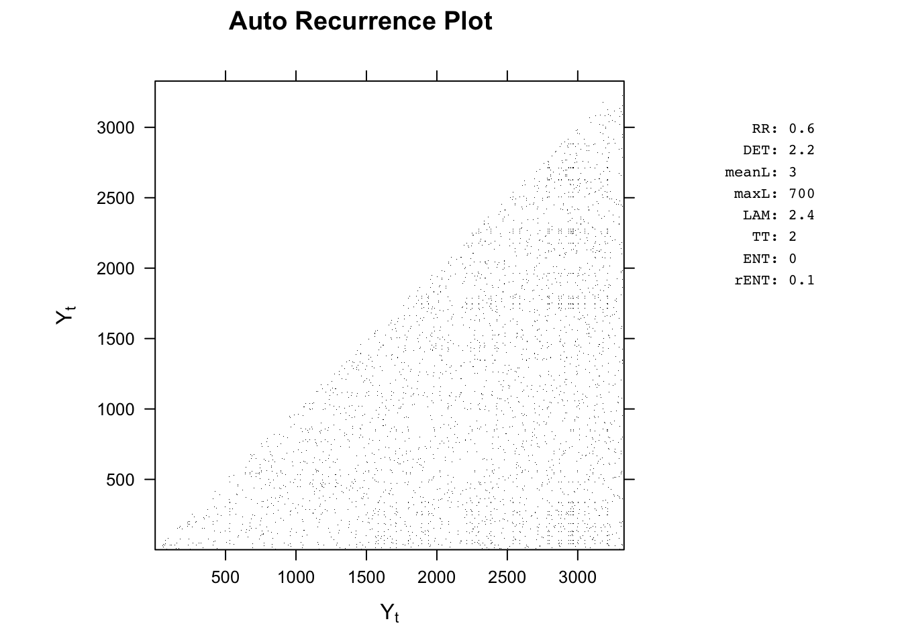
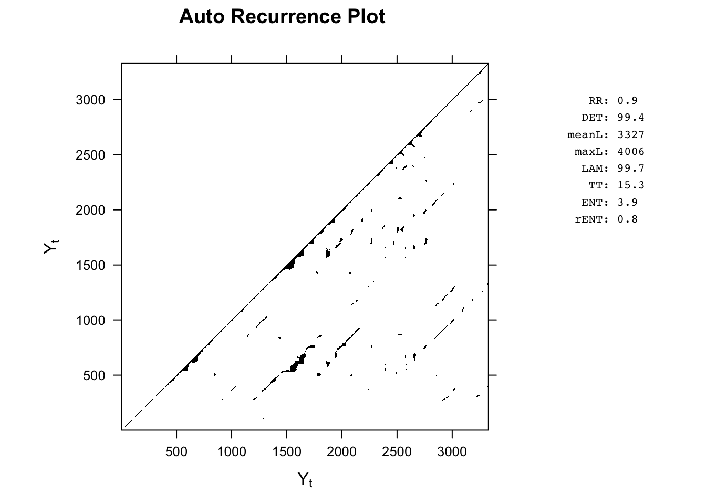
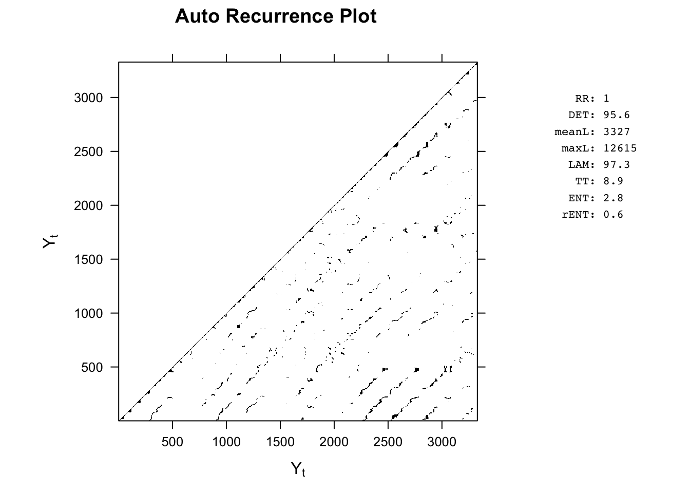
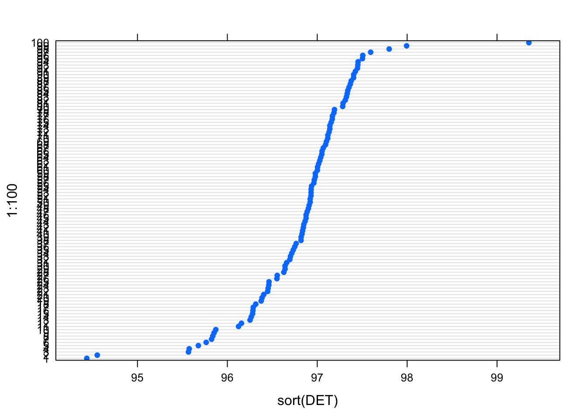

G.2 RQA of the Circle Tracing Task
Get the data generated during the lecture.
library(rio)
xy <- import("https://raw.githubusercontent.com/FredHasselman/DCS/master/assignmentData/RQA_circletrace/mouse_circle_xy.csv") Embedding lag
Determine the embedding lag.
(lagXc <- timeLag(xy$x, method = "mutual", plot.data = TRUE))
[1] 86
attr(,"data")
[,1]
[1,] 1.8748360
[2,] 1.8320247
[3,] 1.7597725
[4,] 1.6660259
[5,] 1.5695448
[6,] 1.4851768
[7,] 1.4155511
[8,] 1.3580141
[9,] 1.3099462
[10,] 1.2697228
[11,] 1.2346290
[12,] 1.2030061
[13,] 1.1738016
[14,] 1.1461442
[15,] 1.1202508
[16,] 1.0955800
[17,] 1.0723971
[18,] 1.0504011
[19,] 1.0295328
[20,] 1.0092911
[21,] 0.9901784
[22,] 0.9716143
[23,] 0.9539218
[24,] 0.9366875
[25,] 0.9201264
[26,] 0.9038439
[27,] 0.8881944
[28,] 0.8729000
[29,] 0.8582478
[30,] 0.8440019
[31,] 0.8302720
[32,] 0.8170165
[33,] 0.8042412
[34,] 0.7918786
[35,] 0.7798863
[36,] 0.7682832
[37,] 0.7568578
[38,] 0.7457565
[39,] 0.7349257
[40,] 0.7244155
[41,] 0.7141488
[42,] 0.7039729
[43,] 0.6938999
[44,] 0.6839407
[45,] 0.6741110
[46,] 0.6644834
[47,] 0.6549952
[48,] 0.6455323
[49,] 0.6361238
[50,] 0.6269657
[51,] 0.6179179
[52,] 0.6093046
[53,] 0.6010238
[54,] 0.5932492
[55,] 0.5856680
[56,] 0.5783174
[57,] 0.5710348
[58,] 0.5639222
[59,] 0.5569276
[60,] 0.5501662
[61,] 0.5434106
[62,] 0.5368340
[63,] 0.5304724
[64,] 0.5241171
[65,] 0.5178612
[66,] 0.5117279
[67,] 0.5056025
[68,] 0.4997365
[69,] 0.4941006
[70,] 0.4886011
[71,] 0.4832675
[72,] 0.4780774
[73,] 0.4732322
[74,] 0.4685945
[75,] 0.4640545
[76,] 0.4596915
[77,] 0.4553726
[78,] 0.4510386
[79,] 0.4469948
[80,] 0.4451781
[81,] 0.4438201
[82,] 0.4427879
[83,] 0.4411173
[84,] 0.4379825
[85,] 0.4335339
[86,] 0.4279071
[87,] 0.4235801
[88,] 0.4247762
[89,] 0.4280886
[90,] 0.4296760
[91,] 0.4286545
[92,] 0.4248078
[93,] 0.4197830
[94,] 0.4166983
[95,] 0.4162246
[96,] 0.4192973
[97,] 0.4245453
[98,] 0.4313695
[99,] 0.4381306
[100,] 0.4425022
[101,] 0.4452126
[102,] 0.4481473
[103,] 0.4521713
[104,] 0.4546178
[105,] 0.4562708
[106,] 0.4612016
[107,] 0.4687082
[108,] 0.4766385
[109,] 0.4846580
[110,] 0.4903264
[111,] 0.4931311
[112,] 0.4937906
[113,] 0.4931051
[114,] 0.4901800
[115,] 0.4862715
[116,] 0.4832530
[117,] 0.4829012
[118,] 0.4874575
[119,] 0.4968100
[120,] 0.5082572
[121,] 0.5202744
[122,] 0.5334663
[123,] 0.5470788
[124,] 0.5590956
[125,] 0.5690183
[126,] 0.5760787
[127,] 0.5810159
[128,] 0.5845512
[129,] 0.5854967
[130,] 0.5855992
[131,] 0.5874306
[132,] 0.5913599
[133,] 0.5955356
[134,] 0.5987059
[135,] 0.6024263
[136,] 0.6063072
[137,] 0.6093108
[138,] 0.6111368
[139,] 0.6118817
[140,] 0.6116046
[141,] 0.6124853
[142,] 0.6154613
[143,] 0.6188560
[144,] 0.6211657
[145,] 0.6219710
[146,] 0.6197909
[147,] 0.6144581
[148,] 0.6066394
[149,] 0.5968153
[150,] 0.5857086
[151,] 0.5734599
[152,] 0.5592622
[153,] 0.5423187
[154,] 0.5234938
[155,] 0.5033835
[156,] 0.4824005
[157,] 0.4633789
[158,] 0.4461670
[159,] 0.4296615
[160,] 0.4136314
[161,] 0.3978943
[162,] 0.3822670
[163,] 0.3669812
[164,] 0.3524403
[165,] 0.3386489
[166,] 0.3257262
[167,] 0.3149718
[168,] 0.3062398
[169,] 0.2990444
[170,] 0.2947886
[171,] 0.2939093
[172,] 0.2937713
[173,] 0.2929135
[174,] 0.2903755
[175,] 0.2865028
[176,] 0.2811382
[177,] 0.2744351
[178,] 0.2677695
[179,] 0.2617230
[180,] 0.2559572
[181,] 0.2506732
[182,] 0.2451949
[183,] 0.2392856
[184,] 0.2330739
[185,] 0.2262502
[186,] 0.2194679
[187,] 0.2136034
[188,] 0.2098218
[189,] 0.2079393
[190,] 0.2069279
[191,] 0.2062112
[192,] 0.2050514
[193,] 0.2027659
[194,] 0.1989667
[195,] 0.1940491
[196,] 0.1887533
[197,] 0.1837352
[198,] 0.1802085
[199,] 0.1787252
[200,] 0.1792536
[201,] 0.1802651
[202,] 0.1810710
attr(,"lags")
[1] 1 2 3 4 5 6 7 8 9 10 11 12 13 14 15 16 17
[18] 18 19 20 21 22 23 24 25 26 27 28 29 30 31 32 33 34
[35] 35 36 37 38 39 40 41 42 43 44 45 46 47 48 49 50 51
[52] 52 53 54 55 56 57 58 59 60 61 62 63 64 65 66 67 68
[69] 69 70 71 72 73 74 75 76 77 78 79 80 81 82 83 84 85
[86] 86 87 88 89 90 91 92 93 94 95 96 97 98 99 100 101 102
[103] 103 104 105 106 107 108 109 110 111 112 113 114 115 116 117 118 119
[120] 120 121 122 123 124 125 126 127 128 129 130 131 132 133 134 135 136
[137] 137 138 139 140 141 142 143 144 145 146 147 148 149 150 151 152 153
[154] 154 155 156 157 158 159 160 161 162 163 164 165 166 167 168 169 170
[171] 171 172 173 174 175 176 177 178 179 180 181 182 183 184 185 186 187
[188] 188 189 190 191 192 193 194 195 196 197 198 199 200 201 202
attr(,"method")
[1] "mutual"False Nearest Neighbours
Run FNN to figure out the number of dimensions … we should get at least 2 (x and y, but maybe some other factors influenced the dynamics).
In this case (as is the case with all real world data) we have to rescale the timeseries. A z-score transform (normalise) is usually ok, but sometimes a unit-scale transform (\(0 \cdots 1\) may be necessary).
(fnnXc <- FNN(scale(xy$x), tlag = lagXc))False Nearest Neighbors for scale(xy$x)
---------------------------------------
Series points : 3500
Embedding dimension(s) : 1 2 3 4 5
Time lag : 86
Oribital lag : 1
Neighbor tolerance (rtol) : 10
Attractor tolerance (atol) : 2
Test results (%):
E=1 E=2 E=3 E=4 E=5
rtol 99.3 37.42 4.77 0.381 0.0326
atol 19.1 0.55 0.00 0.000 0.0000
combined 99.3 37.42 4.77 0.381 0.0326plotRP.fnn(fnnXc)
We got a lag of 86 and an embedding dimension of \(3\) or \(4\). Three is actually not so strange, although we have recorded just 2 coordinates, there’s acceleration differences due to the biomechanics of the arm and hand, or resistance of the mouse on the surface, etc.
Let’s see what package crqa tells us to choose automagically. We got a lag/delay of \(86\), let’s set the maximum lags to consider to \(100\) (lgM).
# General settings for `crqa()`
par0 <- list(rescale = 1,
normalize = 0,
mindiagline = 2,
minvertline = 2,
tw = 0,
whiteline = FALSE,
recpt = FALSE,
side = "lower",
checkl = list(do = FALSE, thrshd = 3, pad = TRUE)
)
# Settings for `optimizeParam()`
par <- list(lgM = 100, steps = seq(1, 6, 1),
radiusspan = 100, radiussample = 40,
normalize = par0$normalize,
rescale = par0$rescale,
mindiagline = par0$mindiagline, minvertline = par0$minvertline,
tw = par0$tw,
whiteline = par0$whiteline,
recpt = par0$recpt,
fnnpercent = 10, typeami = "mindip")
(ansCircle <- optimizeParam(ts1 = xy$x, ts2 = xy$x, par = par, min.rec = 2, max.rec = 5))$radius
[1] 17.96495
$emddim
[1] 3
$delay
[1] 94The suggested embedding dimension is \(3\), the delay (lag) is somewhat higher, \(94\) than 86. These different values for the embedding lag shouldn’t influence the global pattern of the resuts.
Run the RQA
Run RQA with the optimal parameters.
crqaOutput <- crqa(ts1 = xy$x, ts2 = xy$x,
delay = ansCircle$delay,
embed = ansCircle$emddim,
radius = ansCircle$radius,
normalize = par0$normalize,
rescale = par0$rescale,
mindiagline = par0$mindiagline, minvertline = par0$minvertline,
tw = par0$tw,
whiteline = par0$whiteline,
recpt = par0$recpt,
side = par0$side, checkl = par0$checkl
)
plotRP.crqa(crqaOutput)
Run RQA with embedding lag 86 to check if the resulta will be very different.
crqaOutput2 <- crqa(ts1 = xy$x, ts2 = xy$x,
delay = lagXc,
embed = ansCircle$emddim,
radius = ansCircle$radius,
normalize = par0$normalize,
rescale = par0$rescale,
mindiagline = par0$mindiagline, minvertline = par0$minvertline,
tw = par0$tw,
whiteline = par0$whiteline,
recpt = par0$recpt,
side = par0$side, checkl = par0$checkl
)
plotRP.crqa(crqaOutput2)
{#RQA}
Surrogate analysis
Create constrained realisations of the data:
- random order - \(H_0\): the original data come from a process that generates random numbers.
- phase - \(H_0\): the original data come from a linear Gaussian process.
- AAFT - \(H_0\): the observed time series is a monotonic nonlinear transformation of a Gaussian process.
rand.sur <- xy$x[sample(length(xy$x))]
phase.sur <- surrogate(xy$x, method = "phase")
aaft.sur <- surrogate(xy$x, method = "aaft") Let’s plot the different realisations of the data.
surplots <- data.frame(X=c(xy$x,rand.sur,phase.sur,aaft.sur),
t = rep(1:3500,4),
type=factor(c(rep("Original",length(xy$x)),
rep("Random order",length(rand.sur)),
rep("Phase randomised",length(phase.sur)),
rep("AAFT",length(aaft.sur))))
)
xyplot(X~t | type, data=surplots, type="l")
crqaOutput.sur <- llply(list(xy$x,rand.sur,phase.sur,aaft.sur), function(s){
crqa(ts1 = s, ts2 = s,
delay = lagXc,
embed = ansCircle$emddim,
radius = ansCircle$radius,
normalize = par0$normalize,
rescale = par0$rescale,
mindiagline = par0$mindiagline, minvertline = par0$minvertline,
tw = par0$tw,
whiteline = par0$whiteline,
recpt = par0$recpt,
side = par0$side, checkl = par0$checkl
)
})
l_ply(crqaOutput.sur,plotRP.crqa)
A statistical test of the surrogate hypotheses
The code below creates \(99\) RQA analyses based on AAFT surrogates. This takes a while, so we saved the reults, you can download the data from GitHub.
crqaOutput.sur.aaft <- llply(1:99, function(s){
xx <- surrogate(xy$x, method = "aaft")
crqa(ts1 = xx, ts2 = xx,
delay = lagXc,
embed = ansCircle$emddim,
radius = ansCircle$radius,
normalize = par0$normalize,
rescale = par0$rescale,
mindiagline = par0$mindiagline, minvertline = par0$minvertline,
tw = par0$tw,
whiteline = par0$whiteline,
recpt = par0$recpt,
side = par0$side, checkl = par0$checkl
)
})
# Get the measures into a data.frame
df <- ldply(1:99, function(s) data.frame(crqaOutput.sur.aaft[[s]][1:9]))
# Add the original
df[100,] <- data.frame(crqaOutput2[1:9])
export(df,"crqaOutput_aaft.csv") Now lets compare the original RQA measures to to the surrogate measures by rank order.
df <- import("https://raw.githubusercontent.com/FredHasselman/DCS/master/assignmentData/RQA_circletrace/crqaOutput_aaft.csv")
dotplot(1:100~sort(DET), data=df)
# Our observed determinism was the largest value
(max(df$DET)==crqaOutput2$DET)[1] FALSEFor Determinism, the nullhypothesis that the observed time series is a monotonic nonlinear transformation of a Gaussian process, can be rejected at \(p <.01\).
Here’s a summary of all measures, not all of them have the highest rank:
rbind.data.frame(maxSurrogate=colwise(max)(df[1:99,]), original= df[100,]) RR DET NRLINE maxL L ENTR rENTR
maxSurrogate 1.118225 97.99402 14635 3327 10.21021 3.071098 0.6815321
original 1.831344 99.35415 5295 3327 38.05892 4.338005 0.7897244
LAM TT
maxSurrogate 98.82649 10.35873
original 99.91767 15.89280